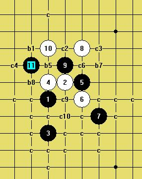
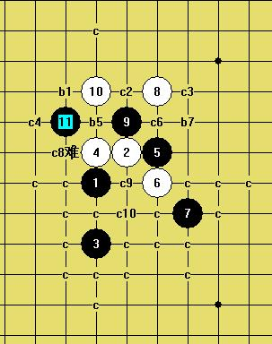
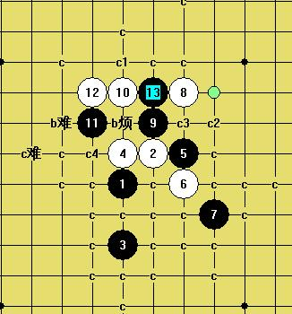
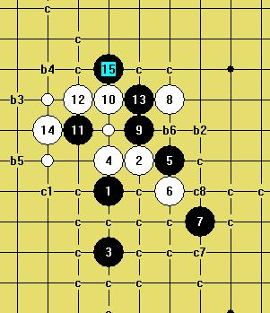

谁来推荐几个白棋的强防
#1 谁来推荐几个白棋的强防作者：淡红的秋樱 发表时间：2009-6-20 22:00:21
=======上图对应的爱五子棋谱代码如下，以便你拆解：========
h8h9h6i9j9j8k7j11i10h11g10
======================================================
［ 茗弈小刀 于 2009-6-21 10:44:56 时花20金币送鲜花一朵］
#2 Re:谁来推荐几个白棋的强防作者：茗弈南极的绿洲 发表时间：2009-6-21 6:29:51
明星的这个9应该是杀不掉吧，很长时间是那些棋手拿来迷惑其他棋手的，让他们找不准方面，空浪费时间。
=======上图对应的爱五子棋谱代码如下，以便你拆解：========
h8i9h6h9j9j8k7j11i10h11g10g11i11f10h12e9f9d8c7h7k6j6k8k9l7m6j7
======================================================
到了这个局面，很多人肤浅的以为这个9可杀，其实换个点，就有点难了。
=======上图对应的爱五子棋谱代码如下，以便你拆解：========
h8i9h6h9j9j8k7j11i10h11g10g11i11f10h12j10g9f12h10f8f11j6
======================================================
=======上图对应的爱五子棋谱代码如下，以便你拆解：========
h8i9h6h9j9j8k7j11i8k10g8h13
======================================================
这个9更是简单败了。但是如果对手中途可以转变下思路，不去急着杀，那还是可以走出一个非常平衡好看的变化。
=======上图对应的爱五子棋谱代码如下，以便你拆解：========
h8i9h6h9j9j8k7j11g8h11g11
======================================================
也只有这个9被地毯了，并不难，开着黑老大就可以解决吧，你可以试一下。
#3 Re:谁来推荐几个白棋的强防作者：小天元子 发表时间：2009-6-21 9:17:45
1、
=======上图对应的爱五子棋谱代码如下，以便你拆解：========
h8i9h6h9j9j8k7j11g8
======================================================
对比这个
=======上图对应的爱五子棋谱代码如下，以便你拆解：========
h8h9h6i10i6i9g9i7f6g6f8
======================================================
2、
=======上图对应的爱五子棋谱代码如下，以便你拆解：========
h8h9h6i9j9j8k7j11i10
======================================================
对比这个
=======上图对应的爱五子棋谱代码如下，以便你拆解：========
h8h9h6i10i6i9g9i7f6g6i8
======================================================
突然想起大鱼的柔和流，然后听说明3也终结了，那如果要我赌一把的话，我还是想把9赌在I10
#4 Re:谁来推荐几个白棋的强防作者：流逝 发表时间：2009-6-21 12:48:45
2楼发出来的变化真奇怪#5 Re:谁来推荐几个白棋的强防作者：淡红的秋樱 发表时间：2009-6-21 13:47:53
=======上图对应的爱五子棋谱代码如下，以便你拆解：========
h8h9h6i9j9j8k7j11i10h11g10g11i11f10h12j10g9f12h10f8f11j6j7i7k8l10k9k10h5
======================================================
=======上图对应的爱五子棋谱代码如下，以便你拆解：========
h8h9h6i9j9j8k7j11i10h11g10g11i11f10h12j10g9f12h10f8f11j6j7i6l7i7k6
======================================================
=======上图对应的爱五子棋谱代码如下，以便你拆解：========
h8h9h6i9j9j8k7j11i10h11g10g11i11f10h12j10g9f12h10f8f11j6j7k8h7i7g6f5f7
======================================================
这个开玩笑吧。明显的黑胜
#6 Re:谁来推荐几个白棋的强防作者：小天元子 发表时间：2009-6-22 16:44:15
=======上图对应的爱五子棋谱代码如下，以便你拆解：========
h8i9h6h9j9j8k7j11i10h11g11g10i12
======================================================
14下哪里好呢？
#7 Re:谁来推荐几个白棋的强防作者：小天元子 发表时间：2009-6-22 17:37:46
=======上图对应的爱五子棋谱代码如下，以便你拆解：========
h8i9h6h9j9j8k7j11i10h11g11g10i12e10f10
======================================================
=======上图对应的爱五子棋谱代码如下，以便你拆解：========
h8i9h6h9j9j8k7j11i10h11g11k10i12
======================================================
=======上图对应的爱五子棋谱代码如下，以便你拆解：========
h8i9h6h9j9j8k7j11i10h11g11i12k10
======================================================
这个等腰三角形真是有意思
#8 Re:Re:谁来推荐几个白棋的强防作者：小天元子 发表时间：2009-6-26 12:09:53

还有4个超级呕心的12防，一起来解决吧
#9 Re:谁来推荐几个白棋的强防作者：小天元子 发表时间：2009-6-26 12:11:22
=======上图对应的爱五子棋谱代码如下，以便你拆解：========
h8h9h6i9j9j8k7j11i10h11g10k10
======================================================
这个12莫非逼边角，然后在下面胜？有无简洁路线？
#10 Re:谁来推荐几个白棋的强防作者：小天元子 发表时间：2009-6-26 12:12:41
=======上图对应的爱五子棋谱代码如下，以便你拆解：========
h8i9h6h9j9j8k7j11i10h11g10g9h10j10i11
======================================================
挑战你的耐力？
#11 Re:谁来推荐几个白棋的强防作者：小天元子 发表时间：2009-6-26 12:13:54
=======上图对应的爱五子棋谱代码如下，以便你拆解：========
h8i9h6h9j9j8k7j11i10h11g10h10g11
======================================================
它很残忍
#12 Re:谁来推荐几个白棋的强防作者：小天元子 发表时间：2009-6-26 12:17:09
=======上图对应的爱五子棋谱代码如下，以便你拆解：========
h8i9h6h9j9j8k7j11i10h11g10g11i11
======================================================
这路貌似是最强的
#13 Re:谁来推荐几个白棋的强防作者：小天元子 发表时间：2009-6-26 23:34:18
=======上图对应的爱五子棋谱代码如下，以便你拆解：========
h8i9h6h9j9j8k7j11i10h11g10g9
======================================================
又拆出一个了，黑先胜 ，还有3个比较猥琐
，还有3个比较猥琐
#14 Re:谁来推荐几个白棋的强防作者：小天元子 发表时间：2009-6-27 12:48:21
=======上图对应的爱五子棋谱代码如下，以便你拆解：========
h8i9h6h9j9j8k7j11i10h11g10h10g11o1i11
======================================================
这两个13哪个好呢？
#15 Re:谁来推荐几个白棋的强防作者：小天元子 发表时间：2009-6-28 0:55:21
=======上图对应的爱五子棋谱代码如下，以便你拆解：========
h8i9h6h9j9j8k7j11i10h11g10g11i11e9h10f10h12j10
======================================================
terrible
#16 Re:谁来推荐几个白棋的强防作者：小天元子 发表时间：2009-6-28 11:18:29
=======上图对应的爱五子棋谱代码如下，以便你拆解：========
h8i9h6h9j9j8k7j11i10h11g10g11i11e9f10g9f9h10f12f8
======================================================
I am lost！
=======上图对应的爱五子棋谱代码如下，以便你拆解：========
h8i9h6h9j9j8k7j11i10h11g10g11i11e9f10h10f12e11
======================================================
#17 Re:谁来推荐几个白棋的强防作者：小天元子 发表时间：2009-6-28 11:49:53
图1
=======上图对应的爱五子棋谱代码如下，以便你拆解：========
h8i9h6h9j9j8k7j11i10h11g10k10i11l9m8
======================================================
这个型太猥琐，不知道白棋在右上的进攻瓦解后还有没有有效的交换手段
图2
=======上图对应的爱五子棋谱代码如下，以便你拆解：========
h8i9h6h9j9j8k7j11i10h11g10h10i11
======================================================
目前看好这个13，但依然猥琐
=======上图对应的爱五子棋谱代码如下，以便你拆解：========
h8i9h6h9j9j8k7j11i10h11g10h10i11f11
======================================================
图3
=======上图对应的爱五子棋谱代码如下，以便你拆解：========
h8i9h6h9j9j8k7j11i10h11g10g11i11e9
======================================================
这个有点飘的14，有什么好的黑攻击路线米？
吃饭去了
#18 Re:谁来推荐几个白棋的强防作者：wrwak 发表时间：2009-6-28 13:22:50
英语水平不到4级#19 Re:Re:谁来推荐几个白棋的强防作者：小天元子 发表时间：2009-6-28 18:28:31


#20 Re:谁来推荐几个白棋的强防作者：小天元子 发表时间：2009-6-28 18:31:47
剩3个强防点，其中b1后面的变化已经像寒恒一样了，如果没什么大恶防的话，终结应该只是时间问题
b5和b7比较猥琐，倾向于进攻材料耗尽后自杀那种，有待细拆，明星3打必胜是很有可能在上当9实现的
#21 Re:谁来推荐几个白棋的强防作者：小天元子 发表时间：2009-6-28 19:22:25
没人拆3打吗？其实明星3打是拆棋上品哦，虽然在RIF下可能没什么价值，一个人拆有点慢有点累#22 Re:谁来推荐几个白棋的强防作者：苯酚 发表时间：2009-6-28 19:49:54
 LS 你的楼房好高捏
LS 你的楼房好高捏
#23 Re:谁来推荐几个白棋的强防作者：小天元子 发表时间：2009-6-28 20:21:21
有种预感，明3不日即将终结，不妨你们也来推荐防点吧
#24 Re:谁来推荐几个白棋的强防作者：wrwak 发表时间：2009-6-28 21:03:49
我就看到你一个人在终结
#25 Re:谁来推荐几个白棋的强防作者：小天元子 发表时间：2009-6-28 22:46:24
强防1：
=======上图对应的爱五子棋谱代码如下，以便你拆解：========
h8i9h6h9j9j8k7j11i10h11g10g11i11f10h12k10
======================================================
强防2：
=======上图对应的爱五子棋谱代码如下，以便你拆解：========
h8i9h6h9j9j8k7j11i10h11g10k10i11l9
======================================================
强防3：
=======上图对应的爱五子棋谱代码如下，以便你拆解：========
h8i9h6h9j9j8k7j11i10h11g10k10i11f10
======================================================
强防4：
=======上图对应的爱五子棋谱代码如下，以便你拆解：========
h8i9h6h9j9j8k7j11i10h11g10h10i11f11
======================================================
#26 Re:谁来推荐几个白棋的强防作者：小天元子 发表时间：2009-6-28 22:57:24
=======上图对应的爱五子棋谱代码如下，以便你拆解：========
h8i9h6h9j9j8k7j11i10h11g10g11i11f10
======================================================
这个14的必胜我拆出来了，那就剩下面这路了
=======上图对应的爱五子棋谱代码如下，以便你拆解：========
h8i9h6h9j9j8k7j11i10h11g10g11i11h10f12
======================================================
应该也是必胜的，这路比较猥琐，但是应该必胜的，那这样这个12也是必败的了
那强防就剩2个了
=======上图对应的爱五子棋谱代码如下，以便你拆解：========
h8i9h6h9j9j8k7j11i10h11g10k10
======================================================
和这个
=======上图对应的爱五子棋谱代码如下，以便你拆解：========
h8i9h6h9j9j8k7j11i10h11g10h10
======================================================